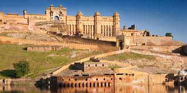

 Amber Fort, also known as Amer Fort is one of the best tourist destinations not just in Jaipur City but the whole of Rajasthan. Amer and the Jaigarh Fort are regarded as a single structure and a subterranean passage connects the two forts. It is believed that the passage was used to escape at times of war or enemy attacks. It is located on Cheel Ka Teela on Aravalli hills JAIPUR
City Palace, Jaipur, which includes the Chandra Mahal and Mubarak Mahal palaces and other buildings, is a palace complex in Jaipur, the capital of the Rajasthan state, India. It was the seat of the Maharaja of Jaipur, the head of the Kachwaha Rajput clan. The Chandra Mahal palace now houses a museum, but the greatest part of it is still a royal residence.